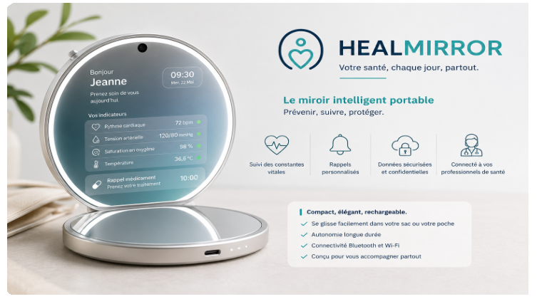
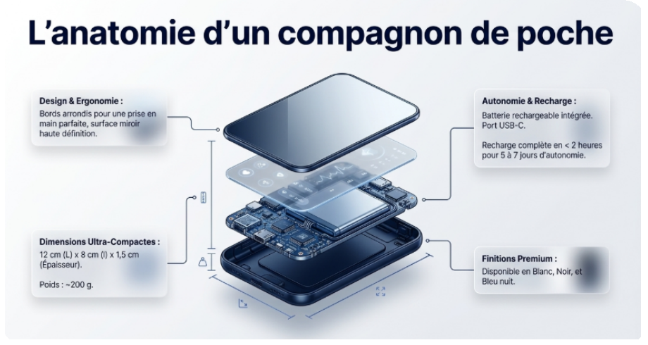

Des rappels oubliés
Médicaments, mesures et rendez-vous passent parfois au second plan.
Le suivi santé qui trouve sa place dans le quotidien
HealMirror réunit rappels, mesures et alertes utiles dans un objet portable et facile à lire. Le senior garde ses habitudes. Ses proches suivent l’essentiel, avec son accord.

Le constat
Les outils actuels demandent souvent d’ouvrir une application, de porter un objet ou de penser à mesurer. HealMirror ramène l’information à un geste familier.
Médicaments, mesures et rendez-vous passent parfois au second plan.
Tensiomètre, balance et application ne racontent pas toujours la même histoire au même endroit.
Les familles veulent savoir que tout va bien sans multiplier les appels.

La solution
Le miroir affiche l’essentiel en grands caractères. Il récupère les mesures de capteurs compatibles et les partage seulement avec les personnes autorisées.
Rappels, constantes et messages compréhensibles en un coup d’œil.
Tensiomètre, balance, oxymètre et thermomètre restent les sources de mesure.
Historique, alertes utiles et partage choisi avec l’aidant.
Une lecture claire
Une matinée avec HealMirror
Jeanne se prépare devant son miroir.
HealMirror lui rappelle son médicament du matin.
Sa tension remonte depuis son tensiomètre compatible.
L’application confirme que tout est normal ou prévient son aidant si un seuil mérite son attention.
Le résultat : un suivi plus régulier, sans contrainte lourde.
Des offres évolutives
Les prix présentés sont indicatifs et seront confirmés après les tests utilisateurs.
Starter
Plus
Family Care
Pack Santé
La confiance avant tout
HealMirror prévoit un hébergement adapté aux données de santé, des accès contrôlés et un partage fondé sur le consentement. Le modèle économique repose sur le produit et le service, jamais sur la revente des données.
HealMirror ne remplace ni un professionnel de santé ni un diagnostic médical. Le produit est actuellement au stade de projet et de prototype.
Feuille de route
Design, affichage, application et connexion aux capteurs.
10 à 20 seniors et aidants pour valider l’ergonomie.
Site, pharmacies pilotes et organisation du support.
Vente directe, abonnement et amélioration continue.
HealMirror
Un miroir portable pour rendre le suivi plus visible, plus simple et plus rassurant.
Revoir le produit